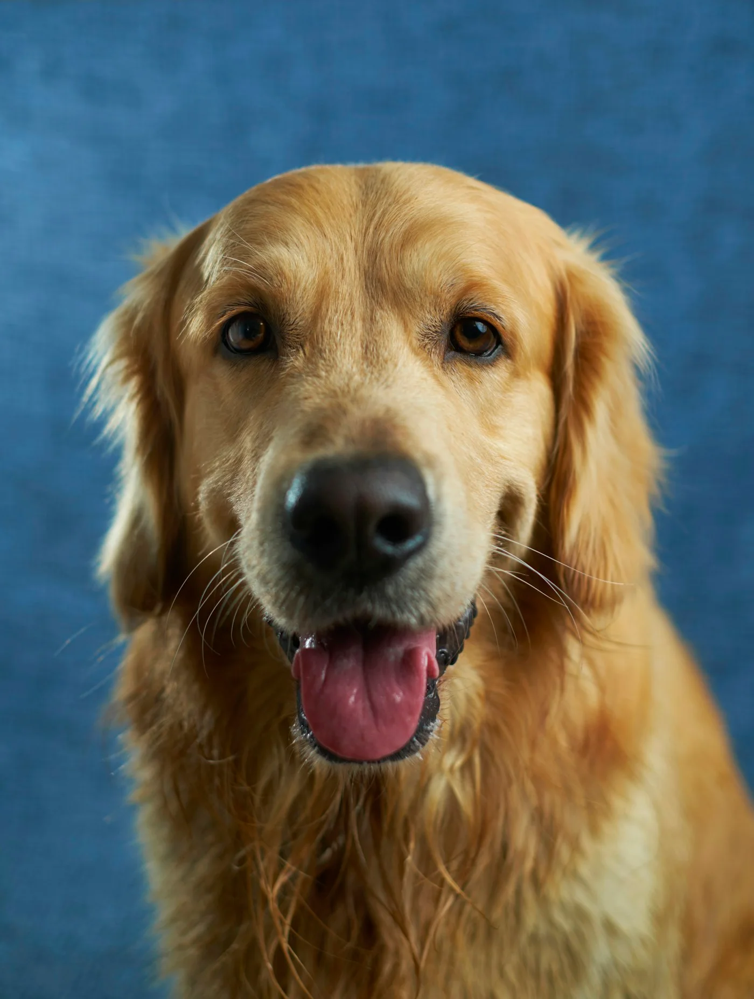
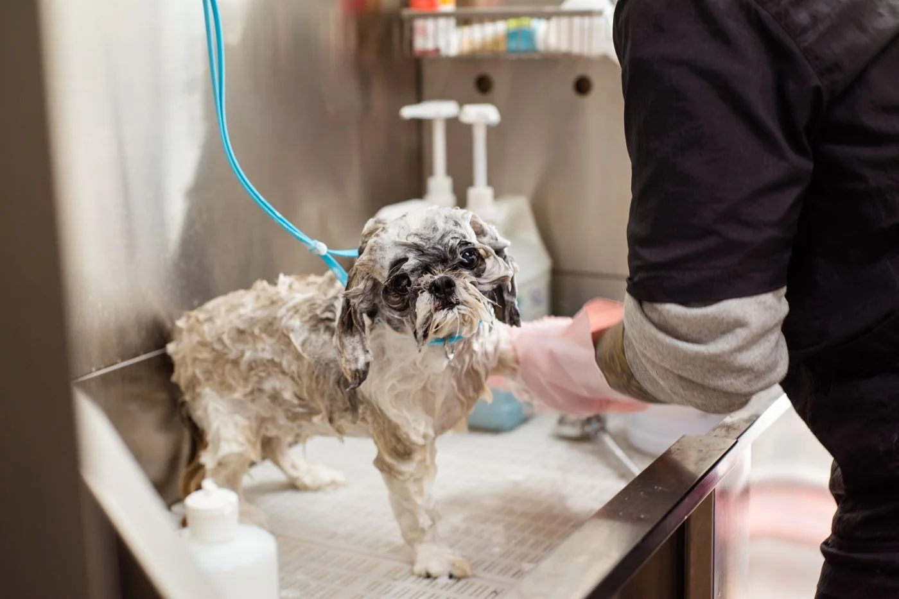
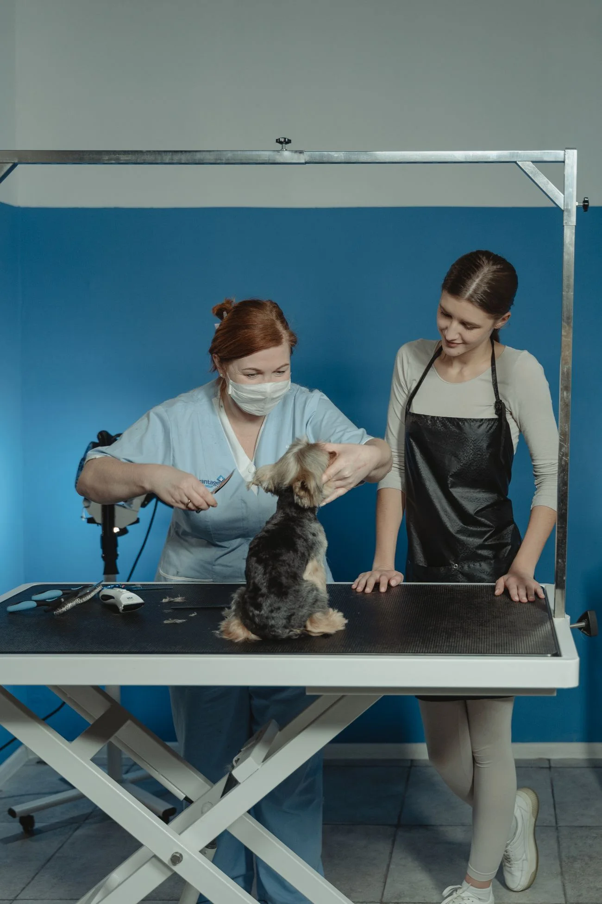

Um pelo nunca é igual ao outro.
Comprimento, textura e presença de nós ajudam a escolher os produtos e o tipo de corte.
Entre uma espuma e um cafuné, a gente cuida dos pelos e respeita o jeitinho do seu melhor amigo.

Do banho da rotina ao corte de pelo,
cada detalhe começa com uma escolha.

Limpeza com produtos escolhidos para o tipo de pelo, seguida de secagem e escovação. Antes de começar, queremos saber como seu pet gosta de ser cuidado.
Conversar sobre banhoO orçamento considera porte, pelagem e necessidades do pet. Nesta demonstração, não há preços nem horários disponíveis para reserva.
É o seu companheiro. Por isso, o atendimento começa antes da água: ouvindo você e conhecendo ele.
Comprimento, textura e presença de nós ajudam a escolher os produtos e o tipo de corte.
Conte como ele reage à água, ao secador e ao toque. Pausas e adaptação fazem parte da conversa.
Informe sensibilidades, desconfortos e orientações do veterinário. Se houver uma condição de saúde, converse com o profissional antes do banho.
Nome, porte, hábitos e o que você procura para ele.
A gente conversa sobre o serviço e o orçamento.
Em um atendimento real, o horário seria confirmado pela equipe.
O cuidado segue o combinado e as necessidades do animal.
Um olhar para o universo que inspira a Mimo.
Toque nas fotos para ver de pertinho.
Fotografias de banco de imagens. Ilustram o conceito e não mostram clientes, instalações ou resultados da Mimo de Pata.

Mais escuta.Na história que imaginamos para a Mimo, tudo começou com uma ideia simples: o banho e a tosa poderiam ser um momento de atenção, com menos pressa e mais conversa.
Assim nasceu um pequeno petshop de bairro, onde o tutor entende o cuidado escolhido e o pet é recebido com respeito ao seu jeito.
A Mimo de Pata é uma marca fictícia, criada pela Ghati Inovações para mostrar como uma boa experiência digital pode aproximar um negócio das pessoas.
Três depoimentos fictícios, escritos como exemplos para esta demonstração.
O Bento estranha o secador. Gostei de poder contar isso antes e entender como o banho seria feito. Essa conversa faz diferença.
Queria aparar o pelo da Mel sem mudar muito o jeitinho dela. Ter espaço para explicar o corte que imaginei me deixou mais à vontade.
Minha gata não gosta de novidades. Perguntar sobre os hábitos da Amora, antes de falar em serviço, foi o que mais gostei na proposta.
Informação também é uma
forma de cuidar.
O primeiro passo seria contar sobre seu pet e o serviço desejado. A equipe confirmaria orçamento e horário pela conversa. Aqui, você pode experimentar o formulário e copiar uma mensagem; nenhuma reserva será realizada.
O tempo varia conforme porte, pelagem, serviço e adaptação do animal. Um atendimento real deve combinar uma estimativa com o tutor antes de começar, considerando também possíveis pausas.
A proposta da Mimo contempla cães pequenos, médios e grandes. A avaliação inicial considera também peso, mobilidade e necessidades individuais. Para gatos, a conversa sobre hábitos e adaptação é especialmente importante.
Textura, comprimento e condição da pelagem influenciam a escolha. Nem todo pelo pede o mesmo corte. Conte o que você deseja e peça orientação sobre o que é adequado antes de decidir.
Informe espécie, porte, idade aproximada, hábitos, sensibilidades, nós na pelagem e experiências anteriores com banho ou secador. Compartilhe orientações veterinárias relevantes. Condições de saúde devem ser avaliadas por um veterinário.
Não. Marca, história, endereço, horários e depoimentos são fictícios. Este site é um projeto de portfólio da Ghati Inovações. Você pode testar as interações e falar com a Ghati se quiser um site para o seu negócio.
Experimente preparar uma mensagem.
É simples, e já ajuda a organizar a conversa.
Rua dos Ipês, 128 · Jardim das Patinhas
Santos, SP · Endereço inteiramente fictício
Segunda a sexta, 9h às 18h
Sábado, 9h às 14h · Horários fictícios
Seus dados ficam só nesta página. Nada é enviado ou armazenado.